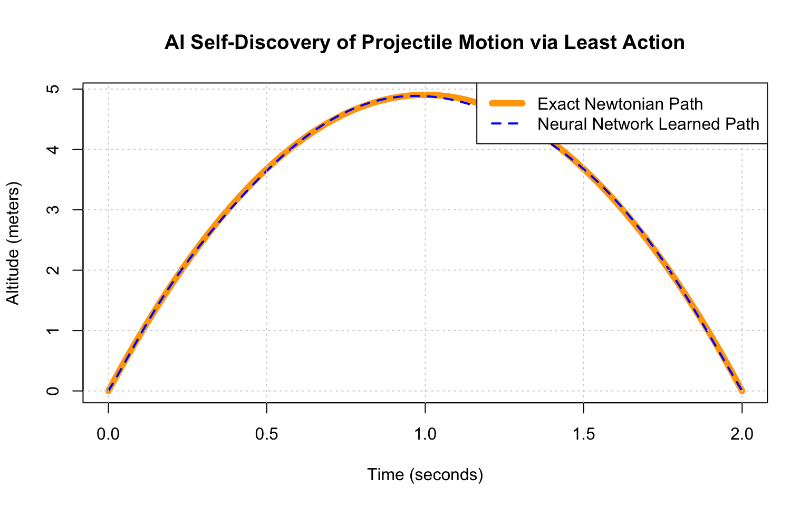

# Initialize random seed for reproducibility
set.seed(42)
# 1. Physical Constants
m <- 1.0 # Missile mass (kg)
g <- 9.81 # Gravity (m/s^2)
t_max <- 2 # Total flight time limit (seconds)
vx <- 10 # Fixed horizontal speed (travels 20m in 2 seconds)Teaching AI the laws of physics via the principle of least action
Introduction: two ways to look at a missile launch
Imagine a missile launched into the air. How does nature decide exactly what path it will take before it hits the ground?
- The Newtonian Approach (Local): Nature looks at the missile frame-by-frame. At every single microsecond, it calculates the forces acting on it (\(F = ma\)) and pushes it to its next position.
- The Lagrangian Approach (Global): Nature looks at the entire flight history all at once. It looks at the starting point, the ending point, and chooses the path that minimizes a physical “cost function” called Action.
In this notebook, we are going to build a Neural Network that knows absolutely zero physics. It doesn’t know what a parabola is, and it doesn’t know Newton’s equations. We will force it to search through an infinite space of possible curves, using optimization to discover the exact path of a missile by minimizing its Action cost.
Defining the “cost” of a trajectory
In physics, the cost function at any given moment is called the Lagrangian (\(L\)). It is simply the difference between Kinetic Energy (\(T\)) and Potential Energy (\(V\)):
\[L = T - V\]
For a missile of mass \(m\) under standard gravity \(g\):
Kinetic Energy (Motion Cost): \(T = \frac{1}{2}m(v_x^2 + v_y^2)\)
Potential Energy (Height Cost): \(V = mgy\)
The Total Action (\(S\)) is the sum of this cost across the entire flight time. Nature always picks the path where \(S\) is minimized:
\[S = \int_{0}^{t_{max}} (T - V) \, dt\]
If our Neural Network guesses a path that is too wavy, the velocity spikes, making \(T\) huge, and the Action explodes. If it guesses a path that is a flat line, it misses out on the potential energy deductions from \(V\). The perfect balance is a parabola.
Fit neural network to find “the path of least action”
We will write a tiny neural network from scratch using base R.
- Input (\(t\)): A specific time.
- Output (\(y\)): The predicted altitude of the missile at that time.
- Loss Function: The Total Action (\(S\)) + a massive penalty if the network fails to start at \(y=0\) or land at \(y=0\).
Setup network and loss function
The code below constructs the forward pass of the network and sets up the calculus loop that approximates the Action integral.
# 2. A Simple Multi-Layer Perceptron Function
# 1 Input (time) -> 5 Hidden Neurons (with smooth tanh curve) -> 1 Output (position y)
neural_network_path <- function(t, weights) {
w1 <- weights[1:5]
b1 <- weights[6:10]
w2 <- weights[11:15]
b2 <- weights[16]
# Forward pass math: activation = tanh(t * w1 + b1)
hidden <- tanh(t %*% t(w1) + matrix(b1, nrow=length(t), ncol=5, byrow=TRUE))
y <- hidden %*% w2 + b2
return(as.vector(y))
}
# 3. The Custom Physics Loss Function
nn_loss_function <- function(weights) {
dt <- 0.01
t_grid <- seq(0, t_max, by = dt)
# Get NN predicted positions across the timeline
y <- neural_network_path(t_grid, weights)
# Calculate velocity (dy/dt) using numerical finite differences
vy <- diff(y) / dt
y_trimmed <- y[-length(y)]
# Energy equations
T_eng <- 0.5 * m * (vx^2 + vy^2)
V_eng <- m * g * y_trimmed
L <- T_eng - V_eng
# Total Action (S) via Riemann sum approximation
action_S <- sum(L * dt)
# Boundary Constraints: The network MUST start and end at ground level (y = 0)
y_start <- neural_network_path(0, weights)
y_end <- neural_network_path(t_max, weights)
boundary_penalty <- 10000 * (y_start^2 + y_end^2)
return(action_S + boundary_penalty)
}Train network
Now, we feed a set of random weights into the network. It will look like a chaotic scribble. Then, we let R’s optimizer adjust those weights to minimize the Action cost.
# 4. Initialize Network Weights Randomly
initial_weights <- runif(16, min = -0.5, max = 0.5)
# 5. Optimize the Weights using Gradient Descent (BFGS algorithm)
nn_optimization <- optim(
par = initial_weights,
fn = nn_loss_function,
method = "BFGS",
control = list(maxit = 2000, reltol = 1e-8)
)
trained_weights <- nn_optimization$parCompare with trajectory calculated using Newtonian mechanics
To see if this variational deep-learning approach actually works, let’s overlay the Neural Network’s self-discovered path against the exact calculus path calculated using Newtonian mechanics (\(y(t) = v_{0y}t - \frac{1}{2}gt^2\)).
# 6. Generate Paths for the Final Graph
t_plot <- seq(0, t_max, by = 0.01)
# Paths generated by our trained AI
y_nn <- neural_network_path(t_plot, trained_weights)
# Paths derived from textbook physics
v0y <- 0.5 * g * t_max
y_true <- (v0y * t_plot) - (0.5 * g * t_plot^2)
# 7. Render Plot
plot(t_plot, y_true, type = "l", col = "orange", lwd = 6,
xlab = "Time (seconds)", ylab = "Altitude (meters)",
main = "AI Self-Discovery of Projectile Motion via Least Action")
lines(t_plot, y_nn, col = "blue", lwd = 2, lty = 2)
grid()
legend("topright", legend = c("Exact Newtonian Path", "Neural Network Learned Path"),
col = c("orange", "blue"), lty = c(1, 2), lwd = c(6, 2))
Takeaways for data scientists
What just happened here?
- No physics equations were harmed: We never gave the network the equation of a parabola (\(t^2\)). We never gave it an acceleration formula.
- Emergent behavior: The network discovered a perfect parabola purely because any other shape would cost more energy.
- Why this matters: This is the underlying concept behind Physics-Informed Neural Networks (PINNs). When physical systems (like fluid dynamics, climate modeling, or quantum mechanics) become too complex to solve using Newton’s step-by-step vector equations, we can turn the problem into a global geometry search using neural networks.